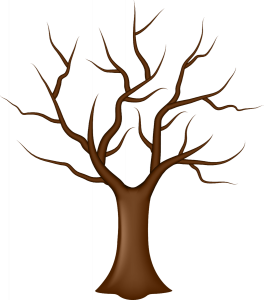

Наведи мишею на мене
"Листя, як і люди, ще не готові здатися. Вони міцно тримаються за минуле, і нехай не в їх силах залишитися зеленими, клянусь, вони до останнього борються за місце, яке так довго було для них домівкою"
Сесілія Ахерн
Поринь в дитинство та лови осінні листочки, які падають з дерева